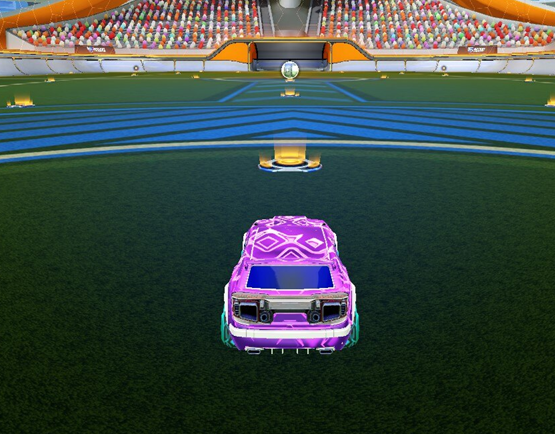
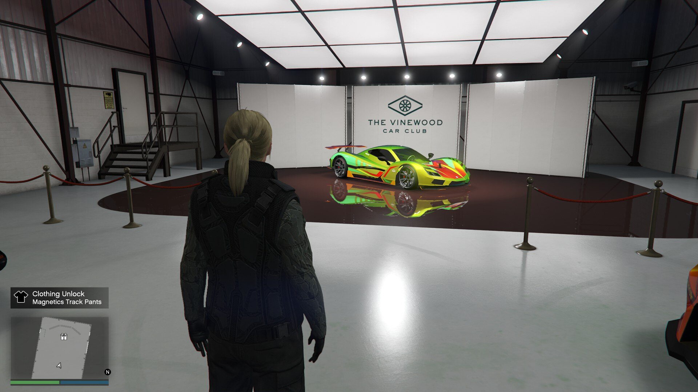

Rocket League
Rocket League is my favorite game of all time. While being a competitive gamer has always been a core
part of my personality, rocket league doesn't just hit my need for competitive environment which it does provide in spades but it also makes me realize
the importance of team work. I have sunk over 1000 hours in this game and honestly, I feel like I have barely scratched the surface of what this game has to offer
and there is so much more to learn and improve at. If there is any game that makes me feel like esports has a real place in gaming, it is this masterpiece.

Grand Theft Auto V
While competitive games are fun, a lot of times after studying all day, you just want to relax and for me, driving around in Los Santos is that perfect after work relaxing time activity. From the amazing recreation of various LA sights to insanely fun story mode and multiplayer world, GTA V has both captured me and englufed me in its world.
GTA Vice City (and RE4) was essentially the game that made me realize that I love games. It might be a leading reason of why I got into Computers in the first place. Making something like that was like my childhood dream. And while I moved away from playing games as much as I used to as life got busy, I have always found comfort in GTA's beautiful storytelling and world aross the titles. And GTA V is to me, just the latest one and well, the multiplayer just made it 10x better.